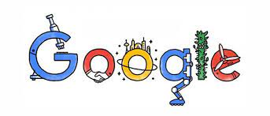

l'entreprise Facebook
Présentation générale
est un réseau social en ligne appartenant à Meta. Il permet à ses utilisateurs de publier des images, des photos, des vidéos, des fichiers et documents, d'échanger des messages, joindre et créer des groupes et d'utiliser une variété d'applications sur une variété d'appareils.
Les fondement

Facebook est fondé en 2004 par Mark Zuckerberg et ses camarades de l'université Harvard : Chris Hughes, Eduardo Saverin, Andrew McCollum et Dustin Moskovitz. D'abord réservé aux étudiants de cette université, il s'est ensuite ouvert à d'autres universités américaines avant de devenir accessible à tous en septembre 2006.
Amazone
L'activité initiale de la société Amazon concernait la vente à distance de livres, avant que la société ne se diversifie dans la vente en ligne de produits culturels et marchands, profitant de l'explosion d'internet. Progressivement, le groupe se lance agressivement dans de nombreux domaines comme l'informatique, la grande distribution, la production cinématographique, les objets connectés, les cliniques de santé, ou l'industrie militaire.
Netflix
Netflix est une entreprise internationale américaine créée à Scotts Valley en 1997 par Reed Hastings et Marc Randolph appartenant au secteur d'activité des industries créatives. Elle est spécialisée dans la distribution et l'exploitation d'œuvres cinématographiques et télévisuelles par le biais d'une plateforme dédiée au service de vidéo à la demande. Son siège social se situe à Los Gatos en Californie.

Fondemement
Google est une entreprise américaine de services technologiques fondée en 1998 dans la Silicon Valley, en Californie, par Larry Page et Sergey Brin, créateurs du moteur de recherche Google. C'est une filiale de la société Alphabet depuis août 2015. L'entreprise s'est principalement fait connaître à travers la situation monopolistique de son moteur de recherche, concurrencé historiquement par AltaVista puis par Yahoo! et Bing. Elle a ensuite procédé à de nombreuses acquisitions et développements et détient aujourd'hui de nombreux logiciels et sites web notables parmi lesquels YouTube, le système d'exploitation pour téléphones mobiles Android, ainsi que d'autres services tels que Gmail, Google Earth, Google Maps, Google Play ou Google Workspace.
Méthode de travaille
Bien-etre
Google entend fonctionner avec une hiérarchie légère et peu contraignante. L'autonomie et un encadrement libéral offrent aux employés des postes de travail moins stressants. Des plannings sont établis pour établir les lignes directrices du travail collectif ; Google incite toutefois ses employés à adhérer à la politique du 80-20 : un horaire composé de 80 % de travail imposé par la direction et 20 % du temps consacré à des projets autonomes sans restrictions notables. Par ailleurs, Google s'efforce de créer un cadre de travail motivant. Appliquant les principes d'organisation adhocratique, elle laisse ses employés libres de gérer l'environnement de leur poste de travail et prône le travail en équipe. Pour ce faire, l'entreprise utilise des plannings communs et des wikis internes. Les lieux de travail sont également radicalement différents de ceux des autres entreprises : la direction offre à ses salariés l'utilisation gratuite de nombreuses installations de divertissement ou de bien-être. Le Googleplex, siège de l'entreprise, comporte des salles de repos, des salles de billard, des terrains de sport, une piscine, un service de massage ou de coiffure. Les employés sont autorisés à amener leur chien, mais pas leur chat, au Googleplex.
Équilibre
Cette politique de bien-être a pour objectif de générer une plus grande motivation et, en conséquence, une productivité accrue. Parallèlement, cette vie professionnelle hors norme devrait fidéliser les employés, assurant ainsi la stabilité de la masse salariale. En effet, d'un point de vue sociologique, cette forme de travail se base sur une très forte intégration de ces derniers au sein de l'entreprise : cette intégration permet aux valeurs de groupe de prendre l'adscendant sur les sentiments personnels et incite les employés à faire passer les intérêts de l'entreprise avant leurs intérêts propres.
| réseau social | plateau streaming | site marchendise | multi-domaine | |
| oui | non | oui (meta) | ||
| Amazon | non | oui (avec amazon prime) | ||
| Netflix | non | oui | non | |
| non | oui | |||